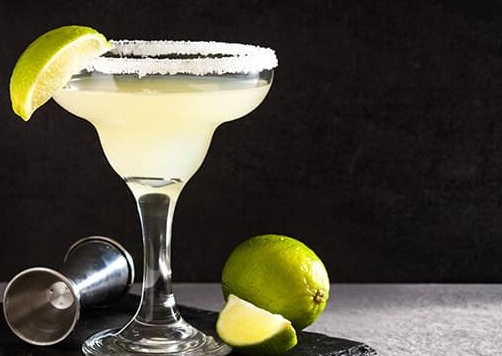

Margarita

Ingredientes:
60 ml de tequila prata
30 ml de suco de limão fresco
15 ml de licor de laranja (como Cointreau ou Triple Sec)
15 ml de xarope simples (opcional, se preferir uma margarita mais doce)
Sal (para a borda do copo)
Gelo
Modo de preparo:
Prepare o copo: Pegue uma fatia de limão e passe-a ao redor da borda do copo de margarita. Em seguida, mergulhe a borda do
copo em um prato com sal, para que o sal grude na borda.
Encha a coqueteleira com gelo até a metade.
Adicione a tequila, o suco de limão, o licor de laranja e o xarope simples (se estiver usando) na coqueteleira.
Agite vigorosamente a coqueteleira por cerca de 15 a 20 segundos para misturar e resfriar os ingredientes.
Coloque alguns cubos de gelo no copo preparado com a borda de sal.
Use uma peneira para despejar o conteúdo da coqueteleira no copo, evitando que o gelo caia no copo.
Sirva imediatamente e desfrute de sua Margarita refrescante!
Você também pode adicionar uma rodela de limão como decoração no copo, se desejar. Lembre-se de que você pode ajustar a
quantidade de suco de limão e xarope simples para adequar o coquetel ao seu gosto pessoal. Aprecie a sua Margarita!